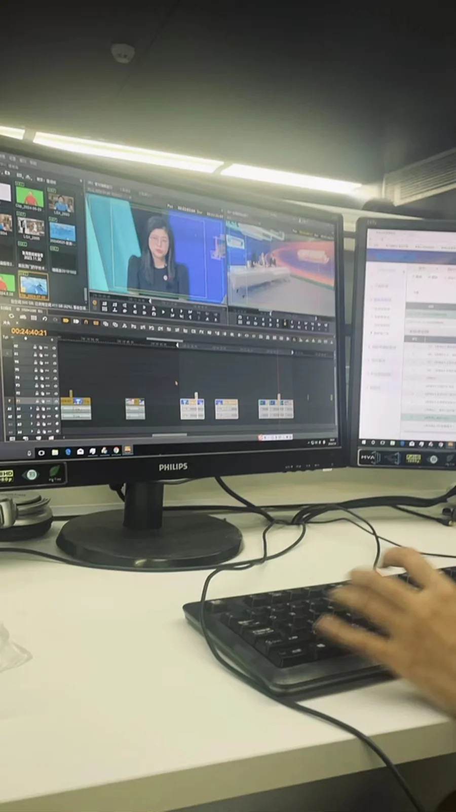

NEWS REPORTING / CONVERGED MEDIA
珠海传媒集团 · 实习记者。
从选题与采访出发，让新闻内容抵达不同媒介平台。
2024.07—2024.09，在珠海传媒集团融媒体中心实习，参与新闻报道跟进、稿件撰写及电视端与新媒体内容制作。
项目背景
珠海传媒集团 / 记者实习
我的工作
选题采访 · 稿件 · 视频制作
可查看的产出
8 条署名视频号作品
01 / PROJECT WORK
内容策划与新闻采编
参与残运会、重要活动等报道跟进，开展桌面研究与选题策划；准备采访提纲、参与线下采访调研，并独立完成多篇新闻稿件。

02 / PROCESS & OUTPUT
融媒体内容制作
参与珠海电视台新闻剪辑及「珠海特区报」新媒体短视频制作，以下为在腾讯微信客户端搜索本人姓名后可查到的 8 条署名视频作品。作品链接均指向微信视频原页面。
 01 / WEIXIN VIDEO非洲青年走进社区，感受中国舞蹈与音乐观看原视频 ↗
01 / WEIXIN VIDEO非洲青年走进社区，感受中国舞蹈与音乐观看原视频 ↗ 02 / WEIXIN VIDEO2024南国书香节观看原视频 ↗
02 / WEIXIN VIDEO2024南国书香节观看原视频 ↗ 03 / WEIXIN VIDEO全民健身日，珠海大放送观看原视频 ↗
03 / WEIXIN VIDEO全民健身日，珠海大放送观看原视频 ↗ 04 / WEIXIN VIDEO珠海博物馆首日参观人数破万观看原视频 ↗
04 / WEIXIN VIDEO珠海博物馆首日参观人数破万观看原视频 ↗ 05 / WEIXIN VIDEO珠海号获克利伯环球帆船赛季军观看原视频 ↗
05 / WEIXIN VIDEO珠海号获克利伯环球帆船赛季军观看原视频 ↗ 06 / WEIXIN VIDEO40城篮球少年横琴“论剑”观看原视频 ↗
06 / WEIXIN VIDEO40城篮球少年横琴“论剑”观看原视频 ↗ 07 / WEIXIN VIDEO2025年残特奥会倒计时500天观看原视频 ↗
07 / WEIXIN VIDEO2025年残特奥会倒计时500天观看原视频 ↗ 08 / WEIXIN VIDEO珠海暑期旅游景点热度飙升观看原视频 ↗
08 / WEIXIN VIDEO珠海暑期旅游景点热度飙升观看原视频 ↗
实习期间，我与带教记者共同开展前期选题策划和现场考察，参与新闻文稿撰写，并承担视频后期的基础粗剪工作。